MIP-0056 tasks — OODS, IMA/SC first¶
Ordered delivery of MIP-0056 as stacked PRs
(.claude/skills/mip-tasks/SKILL.md, scripts/stack.sh). Branch mip-0056/<k>-<slug>, each
based on the previous; merge bottom-up, scripts/stack.sh restack after each squash-merge. Every
task is sized for one subagent session with the MIP and this row as its whole brief: fixtures are
named, tests are named, and nothing in a task needs a live call to pass just test.
Two decisions gate merges, not code (MIP §11): the data licence before task 6 merges, and the
ruleset bypass (or OODS_PUSH_TOKEN) before task 5's scheduled run can commit. Both are human-only;
the tasks around them are not blocked from being written and reviewed.
| # | slug | delivers | tests (must exist before the PR) | depends on |
|---|---|---|---|---|
| 1 | oods-module | oods/ sbt module (.dependsOn(local), in root.aggregate, excluded from every image/Dockerfile), marola.oods model from MIP §5.2: Channel, Indicator, Qualifier, SampleRow, PointRow, Partition, RawFile, Plan, Mode, SourceAdapter; Manifest (read/write data/oods/manifest/<source>.json: sorted keys, one entry per line, temp-file + atomic rename); data/oods/README.md (what, provenance, no licence claim yet), data/oods/sources.json with the ima-sc entry; .gitignore gains !/data/oods/; this file committed; MIP status → Accepted with Tasks: link |
ManifestSpec: round trip; a rewrite of unchanged content is byte-identical; a crash between write and rename leaves the old file intact (write to a temp path in the spec, assert the original is untouched); enum label/fromLabel round-trip for Channel/Indicator/Qualifier (the .claude/rules/scala.md rule — never ordinal) |
– |
| 2 | ima-sc-adapter | oods/ImaScAdapter: enumeration via /registro/anosAnalisados, /municipio/getMunicipios, /local/getLocaisByMunicipio → Partitions (channel Csv, key <municipio-slug>/<beach-slug>, year); fetch = POST /relatorio/exportarCSV; rows = pure CSV parser: UTF-8 BOM, quoted commas in Localização, dd/MM/yyyy + HH:mm, <20/<10 → (n, Below), PRÓPRIA/IMPRÓPRIA → BathingCondition labels, "Sem registros" and header-only → empty; indicator = EColi (the header's word, MIP §5.3); points = /relatorio/mapa → PointRow (UUID key, IBGE code, coords, geoSource = feed); join CSV rows to points on (municipio, beach, point name), unmatched rows keep a slug key and geoSource = none (MIP §8). Fixtures already committed with the MIP PR under oods/src/test/resources/ima-sc/ (captured live 2026-09-14): campeche-2003.csv, campeche-2010.csv, campeche-2025.csv, campeche-2026.csv, sem-registros-1999.csv, header-only.csv, points.json (the live 260-point feed, sorted by CODIGO), municipios.json, locais-florianopolis.json, anos.json. ASCII slugging reuses WaterQualityMatcher.normalise's NFD fold |
ImaScCsvParserSpec: every fixture as MIP §7 lists — row counts (2003: 31, 2010: 29, 2025: 145, 2026: 90), the censored value, both empty shapes, every Campeche row resolves to one of the five known UUIDs with a coordinate, an invented point name resolves to a slug key with geoSource = none and is not dropped. ImaScEnumerationSpec: fixtures → 24 years, 28 municipalities, 43 Florianópolis beaches; a Plan with cities = {Florianópolis} yields 43 × years partitions and nothing else |
1 |
| 3 | ingest-runner | oods/Ingest + oods/Main (sbt oods/run, just oods-ingest *args): Ingest.plan (pure) applies MIP §5.2's rules — immutable partitions skipped when in the manifest, mutable = current year plus the previous one while today − 45 d is in it, Backfill fills [from, to]; Ingest.run fetches with the politeness rules (explicit User-Agent, 250 ms per-host pause, concurrency ≤ 4, 3 attempts with backoff on 5xx/timeout, abort on 429/403), writes raw bytes verbatim to data/oods/raw/<source>/csv/<key>/<year>.csv only when they differ, updates the manifest (url, sha256, bytes, fetched_at, rows), --dry-run prints the plan, exits non-zero if any partition failed after writing the rest; --source/--state/--city/--mode/--from/--to/--concurrency flags; a city no adapter covers is an error |
IngestPlanSpec: mode × date × manifest tables from MIP §7, including the January rule at 2027-01-10 and its absence at 2027-02-20; unknown city fails. IngestRunSpec against a stub Http (the seam ImaScWaterQualityClientSpec already uses): second run over identical responses writes zero files and leaves the manifest byte-identical; a 500 then 200 succeeds with two attempts recorded; three 500s record a failure and the exit code is non-zero while the other partitions are written; a 429 stops the run before the next request; bytes on disk equal the response (BOM intact) |
2 |
| 4 | parquet-build | org.duckdb:duckdb_jdbc pinned in oods/ only; oods/sql/schema.sql (MIP §5.3's DDL verbatim), build.sql (raw CSV + points.json → parquet/<source>/points.parquet and samples/year=YYYY/samples.parquet, sorted by point_key, sampled_on, sampled_at), views.sql (br_bathing_water with csv > pdf > json precedence, latest_per_point, point_stats); oods/Build rewrites a partition only when its content hash (over the sorted rows) differs from the manifest; just oods-build, just oods-sql "<query>" (the nix duckdb CLI — add pkgs.duckdb to flake.nix's projectTools), just oods-check (schema conformance, PK uniqueness, every sample's point exists, unmatched-point count printed) wired into quality-other only when data/oods/** or oods/** changed (a dorny/paths-filter oods output in ci.yml) |
OodsBuildSpec: build over task 2's fixtures — row count equals the parsers' sum, PK unique, <20 lands as (20, 'below'), br_bathing_water keeps the csv row when a pdf row shares the key, point_stats counts one improper-after-rain case correctly; two consecutive builds leave every file's sha256 unchanged; a fixture change rewrites exactly that year's partition. actionlint on the ci.yml filter |
3 |
| 5 | ingest-workflow | .github/workflows/oods-ingest.yml per MIP §5.4: daily schedule + workflow_dispatch (source, mode, from_year, to_year, dry_run), site.yml's JDK/sbt/coursier steps, concurrency: oods-ingest, ingest → build → just oods-check → commit only if git diff --quiet data/oods fails, message data(oods): <source> <mode> <date> — <files> files, <rows> rows with Cost: $0; permissions: contents: write; a dry_run never commits; docs: docs/1-Using-marola/RUN-LOCALLY.md "the OODS store" section, docs/2-Building-marola/ARCHITECTURE.md §5g row gains the store as the third fallback, MIP §11's two human decisions restated where the workflow's README says "first run" |
actionlint (pre-push and quality-other); a dry_run dispatch on the branch is green and commits nothing; a real dispatch with mode=incremental on the branch (not main) produces one commit whose diff is ≈143 CSV files + points.json + manifest + parquet, and a second dispatch produces none — paste both run URLs in the PR body |
4 |
| 6 | backfill-sc | The data PR: just oods-ingest --source ima-sc --mode backfill --from 2003 --to 2025 then incremental, just oods-build, just oods-check; commits data/oods/raw/ima-sc/**, parquet/**, manifest/ima-sc.json; data/oods/README.md gains the licence statement MIP §11 decided, the row and file counts, the tree size, and git count-objects -vH before/after in the PR body. Does not merge before the licence decision. Code changes: none (any parser fix found while backfilling is its own PR on top of task 2's branch, restacked) |
just oods-check green on the full tree; just oods-sql "SELECT count(*) FROM br_bathing_water" in the PR body with the unmatched-point count; a spot check of five rows against the portal's history page pasted as evidence; just quality green (ruff/actionlint untouched; quality-other's oods filter fires) |
5 |
| 7 | pdf-channel | oods/ImaScBulletinAdapter (channel Pdf): partitions = dated bulletins from the portal's index (ImaScPdfWaterQualityClient.latestBulletinUrl generalised to "all linked dates") plus, in backfill mode, the Wayback CDX list (web.archive.org/cdx/search/cdx?url=…downloadPDF/*&collapse=original, id_ raw fetch); rows via ImaScPdfParser (visibility private[water] → private[marola], no logic change), keyed like the CSV rows, bulletinDate set, indicator = Unknown; writes raw/ima-sc/bulletins/YYYY-MM-DD.jsonl (sorted rows), never the PDF, manifest carries the PDF's sha256 and URL; build.sql reads the jsonl into the same sample table; a PDF partition is immutable once parsed. Fixtures, all already under oods/src/test/resources/ima-sc/ from the MIP PR: ima-boletim-sc-2023-03-10.pdf (the Wayback bulletin), index-2026-09-14.html (the portal index with ten bulletin links), wayback-cdx-downloadPDF.json (the 192-row CDX answer); plus local/'s existing ima-boletim-sc-2026-08-28.pdf |
ImaScBulletinAdapterSpec: both fixtures parse to the expected point counts (2026: 260 minus the one uncollected point; 2023: assert the real count), every row keys to a UUID via the points fixture, a CDX fixture yields 192 partitions, an index HTML fixture yields 10; OodsBuildSpec gains: a bulletin row and a CSV row for the same (point, date) → the CSV row wins in br_bathing_water, the PDF-only date survives |
4 |
| 8 | latest-export | oods/Build also writes data/oods/latest/<source>.json from latest_per_point in CachedWaterQualityClient's version: 1 shape (sorted by id, one point per line); site.yml sets MAROLA_WATER_CACHE_DIR=data/oods/latest so the map's fallback chain becomes live → PDF → store (MIP §5.5); CachedWaterQualityClient must not write into that directory when it is the store (a readOnly flag, or the site build passes a separate write dir — decide in the PR, test either way) |
LatestExportSpec: the export round-trips through CachedWaterQualityClient.read and WaterQuality.fresh sees the newest sample; a site build with the live and PDF channels stubbed down still renders Campeche's water marks from the store; PipelineGoldenSpec/SiteBuilderSpec unchanged |
6 |
| 9 | docs-status | docs/2-Building-marola/ARCHITECTURE.md §3 "what's built" gains the store; docs/4-Research-and-plans/FUTURE-WORK.md §9 points here for history-grounded features; docs/README.md indexes data/oods/README.md; MIP-0056 → Implemented with the PR numbers and summed Cost:; the §5.6 rollout table's next row (inea-rj) gets a Follow-up MIP line rather than a task here |
just build && just test && just quality green; just mip-graph --check clean |
7, 8 |
Task DAG, edges exactly equal to the depends on column above:

Sequencing notes¶
- 1 → 2 → 3 → 4 → 5 is the critical path and each step is testable offline. Task 7 (PDF channel) and task 8 (the app-facing export) are independent of each other and of task 6's data; 7 forks from 4, 8 needs 6 only because its live check wants real data behind it.
- Task 6 is data, not code: the ≤400-line rule does not apply; the PR body carries the size and count evidence instead. It is the only task that cannot merge before a human decision (licence). Write it, open it, leave it open.
- Task 5's real dispatch runs on the branch, deliberately: the ruleset bypass is not needed to
prove the workflow, only to let the schedule commit to
mainlater. Do not add a PAT to get the branch run green. - Restack hazards: task 7 edits
build.sqlafter task 4 wrote it, and task 8 editsoods/Buildafter 4; both are additive (new source reads, new output), so a restack is a clean rebase; keep task 7 and 8 from touching the same lines ofBuild.scalaby giving the export its ownLatestExportobject. - Subagent brief per task: the MIP, this row,
AGENTS.md,.claude/rules/scala.md, and the fixtures directory. A task that needs a live call to write its tests has been mis-scoped; every fixture named above was captured on 2026-09-14 and is listed in the MIP's appendix.